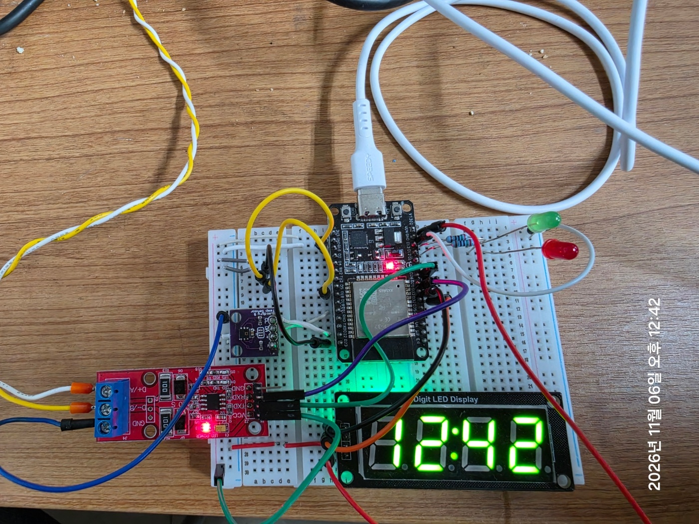
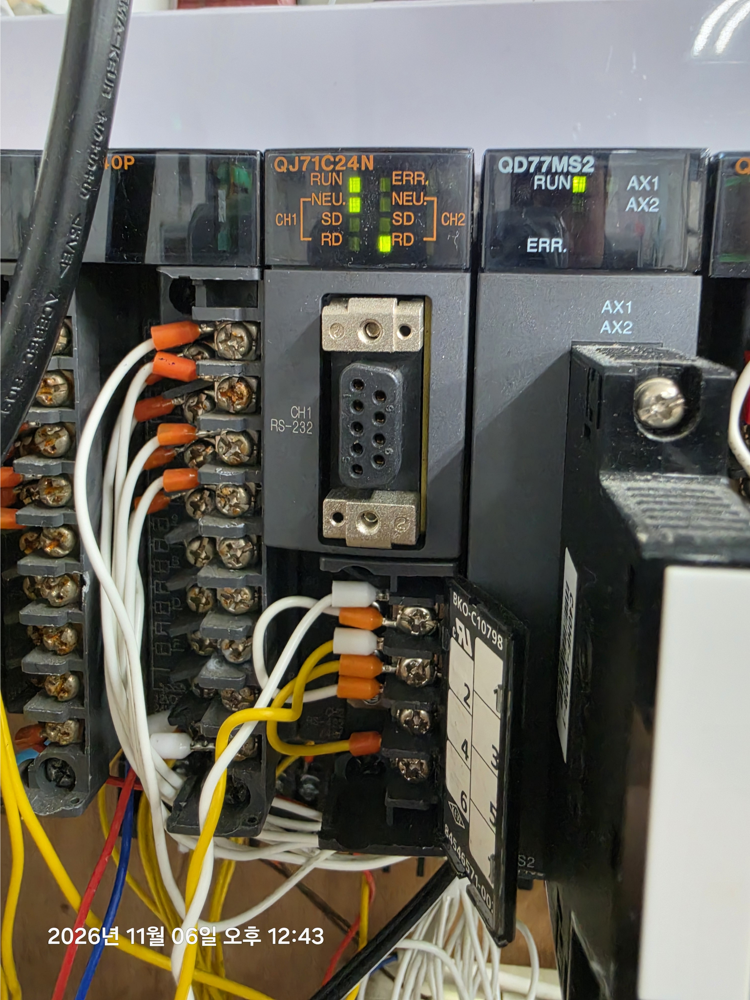
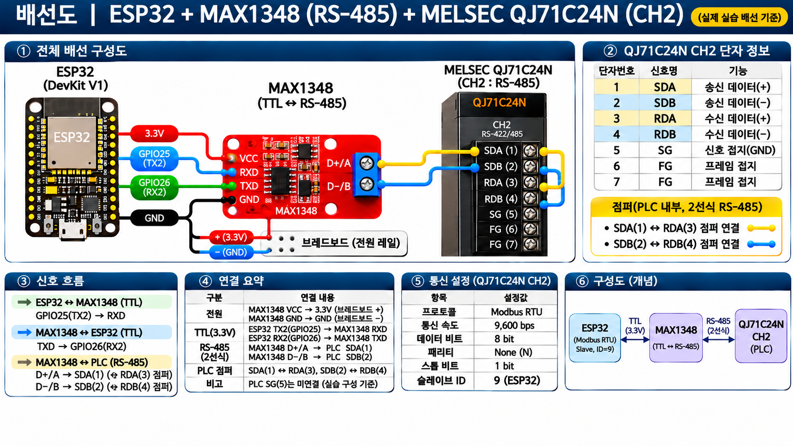
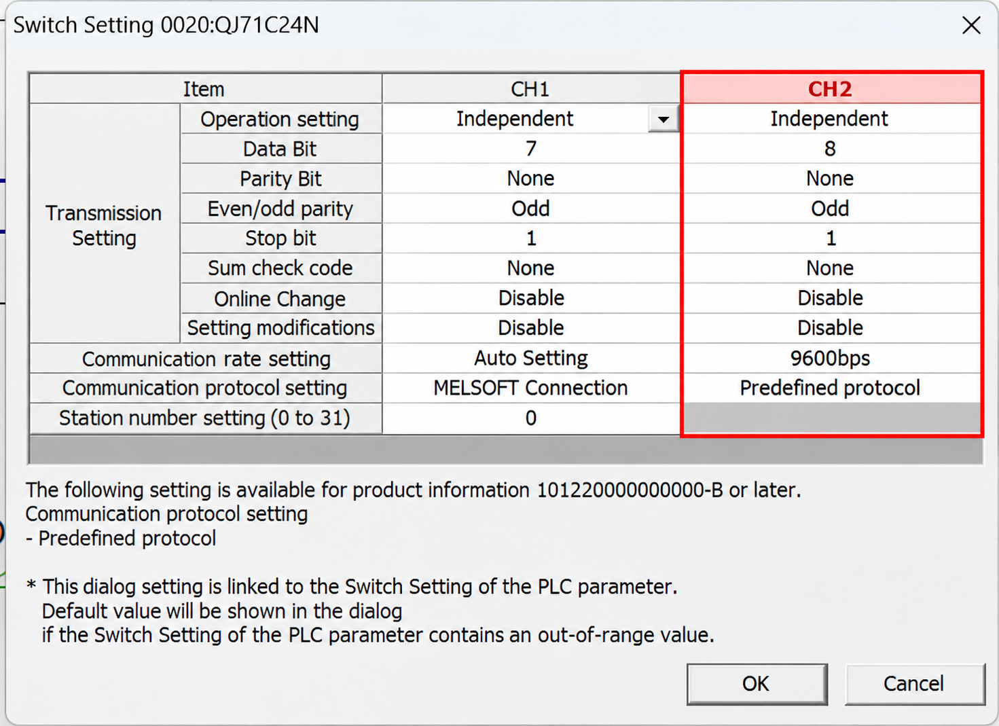
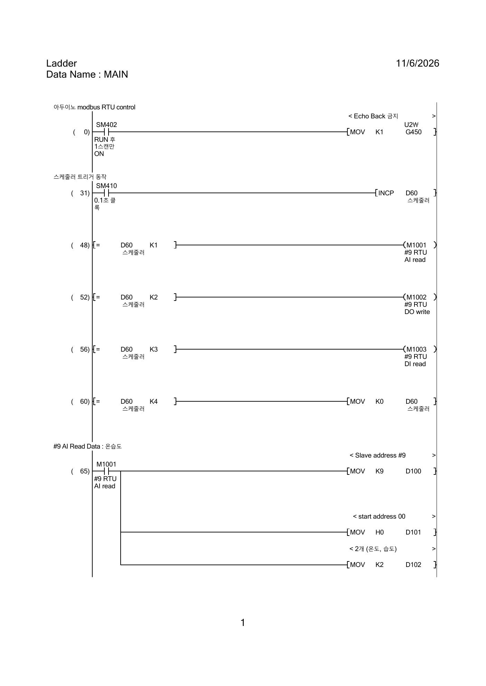
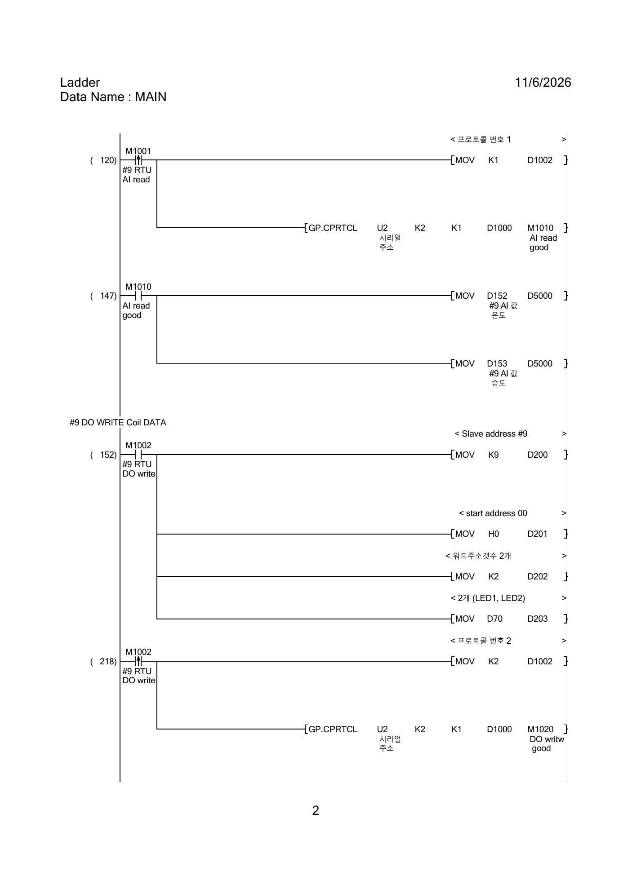
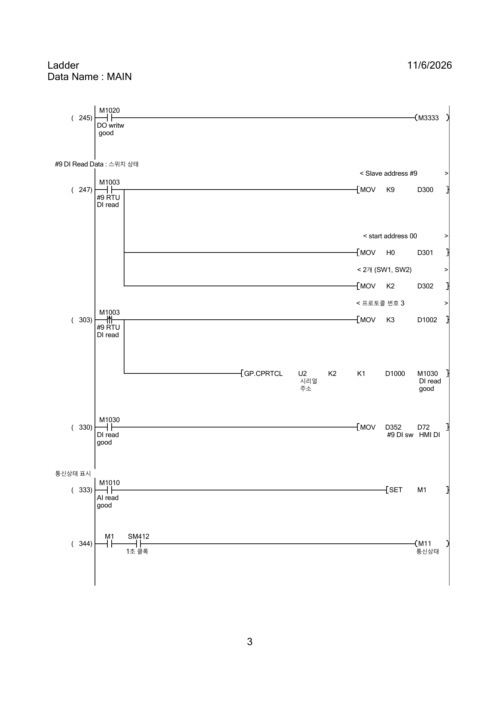
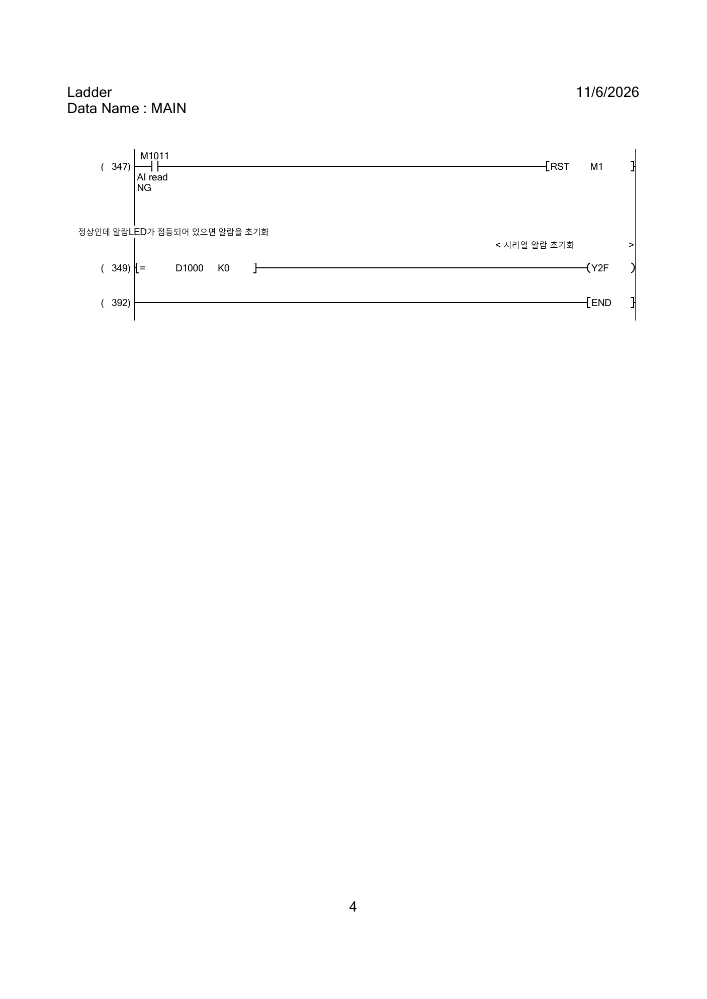
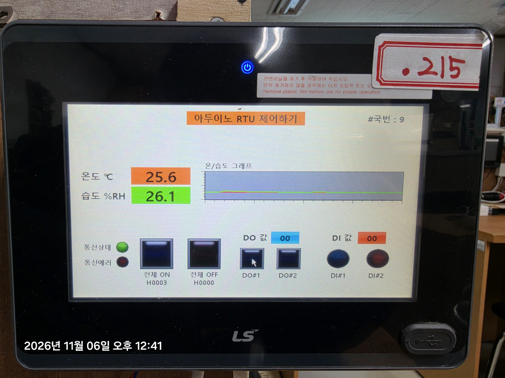

ESP32 온습도 센서 기반
MELSEC PLC·HMI 연동
HTU21D 센서로 온습도를 측정하고 ESP32의 Modbus RTU Slave와 MELSEC Q 시리즈 QJ71C24N CH2를 RS-485로 연동한 실습입니다. PLC는 온습도·스위치 입력을 읽고 LED 출력 명령을 전송하며, LS HMI에서 온습도 트렌드와 입출력 상태를 확인합니다.
01. 시스템 구성 및 데이터 흐름
I²C 온습도 센서
RTU Slave ID 9
TTL ↔ RS-485
PLC RTU 통신
모니터링 · DO 제어
온습도: 센서 → ESP32 → PLC D152/D153 → HMI / 출력: HMI → PLC → ESP32 GPIO12/13 / 스위치 입력: ESP32 GPIO14/27 → PLC → HMI
02. 하드웨어 및 실제 배선


GPIO 및 통신 배선
| 장치 / 신호 | 연결 | 역할 |
|---|---|---|
| HTU21D | SDA GPIO21 / SCL GPIO22 | I²C 온습도 측정 |
| 스위치 1 / 2 | GPIO14 / GPIO27 | INPUT_PULLUP 디지털 입력 |
| LED1 / LED2 | GPIO12 / GPIO13 | 디지털 출력 |
| ESP32 TX2 / RX2 | GPIO25 → MAX1348 RXD / GPIO26 ← MAX1348 TXD | UART2 |
| MAX1348 D+/A | PLC CH2 SDA(1) | RS-485 (+), 외부 배선 1가닥 |
| MAX1348 D−/B | PLC CH2 SDB(2) | RS-485 (−), 외부 배선 1가닥 |
| MAX1348 GND | 브레드보드 (−) | 공통 접지; PLC SG는 실습에서 미연결 |
| PLC 점퍼 2개 | SDA(1)–RDA(3) / SDB(2)–RDB(4) | 2선식 RS-485 송수신 단자 공통화 |

배선 이미지는 학습용 시각 자료입니다. 실제 결선은 위 핀맵 표와 장치 단자 표기를 기준으로 확인해야 합니다.
03. QJ71C24N CH2 통신 설정

| 설정 | 값 |
|---|---|
| 프로토콜 | Predefined Protocol (Modbus RTU) |
| 속도 | 9600bps |
| 데이터 / 패리티 / 스톱 | 8bit / None / 1bit (8N1) |
| ESP32 Slave ID | 9 |
| ESP32 UART2 | GPIO26 RX / GPIO25 TX |
코드 주석 일부에는 8O1이 남아 있으나 실제 초기화 설정은 SERIAL_8N1입니다.
04. PLC 레더 및 Modbus RTU 순차 처리
PLC는 통신 작업을 순서대로 실행합니다. GP.CPRTCL U2 K2 K1 D1000 ... 명령을 통해 QJ71C24N CH2에서 미리 정의한 통신 프로토콜을 실행합니다.
| 순서 | 트리거 | Modbus 기능 | 처리 |
|---|---|---|---|
| 1 | M1001 | FC04 | Input Register 2개 읽기: 온도·습도 → D152 / D153 |
| 2 | M1002 | FC15 | D70 기반 LED1·LED2 Coil 쓰기 |
| 3 | M1003 | FC02 | 스위치 2개 입력 읽기 → D72 |
레더에서 D5000은 통신 수신값 확인용으로 사용했으며, HMI 온습도 표시는 D152·D153을 직접 참조합니다. 온습도는 하나의 HTU21D 센서에서 측정하지만 Modbus Input Register는 온도·습도 각각 1개씩 총 2개를 사용합니다.




05. LS HMI 온습도 모니터링 및 제어

| HMI 기능 | PLC / ESP32 연결 |
|---|---|
| 온도 표시 | D152 수신값 (온도 ×10 데이터의 소수점 한 자리 표시) |
| 습도 표시 | D153 수신값 (습도 ×10 데이터의 소수점 한 자리 표시) |
| DO#1 / DO#2 | PLC 출력 명령 → FC15 → ESP32 GPIO12 / GPIO13 |
| DI#1 / DI#2 | ESP32 스위치 → FC02 → PLC 입력 상태 표시 |
| 트렌드 / 통신 상태 | 온습도 변화와 통신 상태 확인 |
06. 아두이노 핵심 코드
전체 소스가 아닌 PLC 연동에 필요한 핵심 부분만 발췌했습니다. 아래 코드는 ESP32 Arduino 프레임워크 기반입니다.
센서 측정 — Sensor.cpp
// Sensor.cpp : 1초 주기 갱신
if (now - lastSensorRead >= SENSOR_READ_INTERVAL) {
lastSensorRead = now;
currentTemp = myTemp.readTemperature();
currentHum = myTemp.readHumidity();
}delay 없이 1초 주기로 측정값을 갱신합니다.
RTU 통신 초기화 — ProjectConfig.h / ModbusRTUService.cpp
// ProjectConfig.h / ModbusRTUService.cpp
constexpr uint8_t RTU_SLAVE_ID = 9;
constexpr int RTU_RX_PIN = 26;
constexpr int RTU_TX_PIN = 25;
constexpr uint32_t RTU_BAUD = 9600;
rs485.begin(RTU_BAUD, SERIAL_8N1, RTU_RX_PIN, RTU_TX_PIN);ESP32를 ID 9의 RTU Slave로 구성하고 UART2를 9600bps 8N1로 초기화합니다.
온습도 응답 및 입출력 — ModbusRTUService.cpp
// ModbusRTUService.cpp : FC04 응답값 구성
const uint16_t value =
(start + i == 0) ? scaledSensor(currentTemp)
: scaledSensor(currentHum);
response[pos++] = value >> 8;
response[pos++] = value & 0xFF;
// FC02 : SW1/SW2 입력 비트 응답
// FC15 : 수신한 코일값으로 LED1/LED2 제어FC04로 온습도 ×10 값을 전달하고, FC02로 스위치 상태를 읽으며, FC15로 LED 출력을 변경합니다.
LED 출력 연동 — ModbusService.cpp
// ModbusService.cpp : RTU 명령 → TCP Coil + 실제 GPIO
void setModbusLed1(bool state) {
mb.Coil(MB_COIL_LED1, state);
digitalWrite(LED1_PIN, state ? HIGH : LOW);
led1State = state ? HIGH : LOW;
}RTU에서 받은 LED 제어 명령을 실제 GPIO와 Modbus TCP Coil 상태에 함께 반영합니다.
07. AI 활용 및 학습 내용
ESP32 아두이노 프로그램은 ChatGPT를 활용해 작성했습니다. 작성된 코드를 바탕으로 HTU21D 센서값의 정수 변환, Modbus RTU 기능 코드(FC02·FC04·FC15), PLC의 GP.CPRTCL 호출 구조와 HMI 데이터 표시 흐름을 학습하고 실제 장치 간 연동을 확인했습니다.
학습 초점은 RS-485 배선, PLC 통신 설정, 레더 통신 시퀀스, HMI 모니터링 및 입출력 동작의 연결 관계를 이해하는 데 두었습니다.